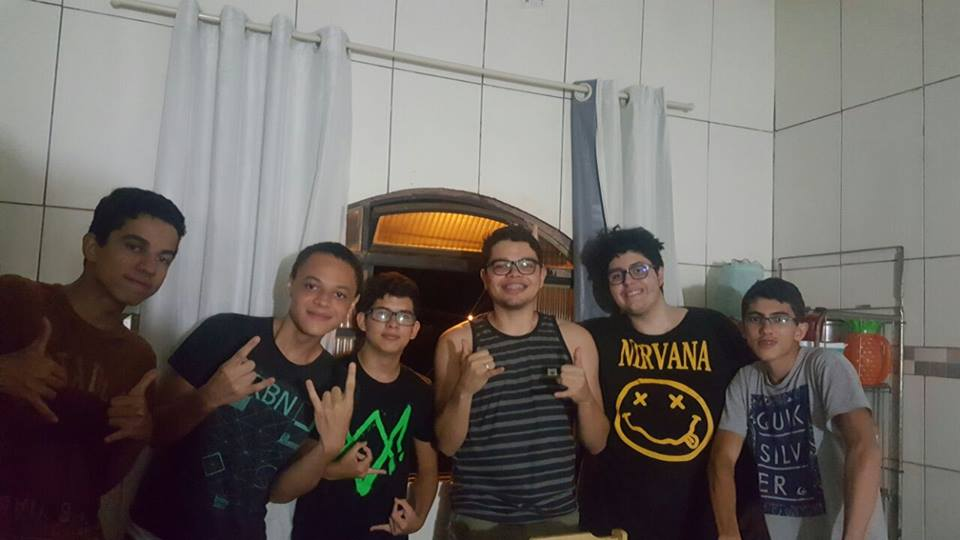

Desde quando nasceu, em 14 de maio de 1999, Gabriel sempre teve curiosidade sobre as tecnologias que o cercavam. Começou a estudar programação por conta própria e, na adolescência, se apaixonou pela área, principalmente pelas maneiras engenhosas que exploits de segurança funcionavam.
Nesta nova etapa de sua vida, pretende se aprofundar no que realmente ama. E a melhor maneira de fazer isso é colocando em prática o que estuda, aplicando no mercado de trabalho.
Além de ter contato com áreas novas, também espera desenvolvimento em suas habilidades sociais, como trabalhar em grupo.
Objetivos
O objetivo principal de Gabriel é desenvolver suas habilidades tanto como programador, quanto como um membro de equipe.
A melhor maneira de fazer isso é se colocando no meio profissional e aprendendo com seus erros.
Qualificações
Formalmente, concluiu apenas o ensino médio. A maior parte de seu conhecimento é produto de sua curiosidade.
Ele é familiarizado principalmente com:
-Python
-C++
-Javascript
-Arduino
Curiosidades
Vindo de uma família de músicos, outras de suas habilidades são:
-Guitarra
-Violão
-Teclado
-Piano
-Ocarina
-Escaleta
-Fazer miojo
*9 a cada 10 dentistas recomendam contratar Gabriel
Experiência
Quando seu pai pediu ajuda para um projeto de mestrado, Gabriel não exitou em aceitar o desafio de criar um mapa online catalogando ações afirmativas no Brasil.
Mesmo sem saber nada de desenvolvimento de sites, nem sobre Javascript na época, se esforçou e conseguiu fazer uma elegante integração entre um banco de dados e a API do Google Maps.
O próximo passo desse projeto será adicionar um mapa de calor, mostrando as áreas com mais inclusão social.


Ainda não sente segurança nas capacidades de Gabriel? Você não precisa confiar apenas nessas descrições, dê uma olhada no que quem já conviveu com ele tem a dizer!
“Precisava de alguém que me auxiliasse com levantamento de dados pela internet e elaboração de um site e Gabriel foi a escolha perfeita!Desde o início, com o desenvolvimento de uma ferramenta para extrair dados de outros sites, ele se manteve focado e com respostas muito rápidas às minhas demandas.Depois, já com a elaboração do site, tinha soluções adequadas a cada uma das minhas solicitações para inclusão de novas funcionalidades.Se você precisa de alguém responsável, comprometido e talentoso, Gabriel Nunes Ferreira é o cara!”
- Gianmarco Loures Ferreira (Pai e amigo)
“O cara tem dons artisticos e excelente raciocinio lógico. Recomendo-o para quem precisa de um profissional multidisciplinar que faz o que precisa ser feito desde tocar escaleta a programar um arduino.”
- Douglas Nunes de Oliveira (Primo, amigo e colega de quarto)
"Gabriel é de uma criatividade ímpar, um jeito de pensar único, sempre procura ver a “situação” como um todo e resolver os problemas da forma mais sábia. Tem uma sede de conhecimento que o difere dos demais. Ele entra de cabeça em seus projetos: desde aprender a tocar um novo instrumento até ser um mestre em uma nova linguagem de computação. Não é o tipo de pessoa que se contenta com o senso comum ou aceita tudo o que lhe é imposto, sempre quer saber o porquê das coisas e criar sua própria opinião a respeito de tudo o que lhe aparece. Mas não se deixe enganar, pelo seu jeito sério e sua cara de bad boy, Gabriel é um amor de pessoa. É um rapaz com o coração tão grande quanto o seu intelecto, sempre disposto a ajudar um amigo, ou qualquer ser vivo que precise de seu auxílio, da melhor forma possível.Uma peça que faz toda diferença em qualquer time em que for colocado, um excelente irmão e um jogador de CS:GO quase tão bom quanto eu."
- Matheus Vilela (Irmão de coração)
"Um amigo, que alem de ser um amor de pessoa, tem uma inteligência invejável. Tem um coração tão grande, quanto sua vontade de aperfeiçoar suas habilidades. Sempre busca uma forma de ajudar alguém, seja por meio de sua empatia, ou por seu vasto conhecimento da area computacional.Sempre me carrega nas partidas de Counter Strike, mas isso ja são outros 500... Gabriel é uma pessoa única, e quando eu crescer, quero ser igual a ele."
- João Paulo Freitas de Miranda (Irmão de coração)
"Gabriel é longe umas das pessoas mais criativas e sensatas que eu conheço, muitas vezes me ajudou com problemas difíceis aonde não via uma saída, ele me ajudou a resolver de forma rápida, mas da forma certa de resolver. Gabriel também possui um inteligência e competência admirável, além disso ele não é só meu amigo como meu irmão e com isso posso dizer com a maior tranqüilidade, que ele é a pessoa certa para o serviço que coloca-lo!"
- Ricardo Augusto Miranda de Paiva (Irmão de coração)